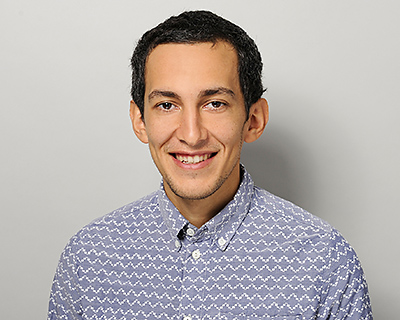

I am a PhD student in Economics at the University of Zurich. My research
focuses on macroeconomics, environmental economics and trade.
You can download my CV
here. Feel free to
reach me at
felix.samysoliman@econ.uzh.ch.
Papers
-
Capital Replacement and the Demand for Clean Technology
[Work in Progress, 2025]
-
Slack and Economic Development
[Working Paper]
with Michael W. Walker, Nachiket Shah, Edward Miguel, Dennis Egger, and Tilman Graff,
NBER Working Paper, 2024
https://www.nber.org/papers/w33055
-
Working paper (joint with Mark Curtis, Weiting Miao, Juan Carlos Suárez Serrato, and Daniel Xu)
[Working Paper] [PDF]
View PDF
, 2025
-
Democratization, contracts and comparative advantage
[Based on Bachelor Thesis] [Journal Article]
https://www.sciencedirect.com/science/article/pii/S0165176518303847
, 2018